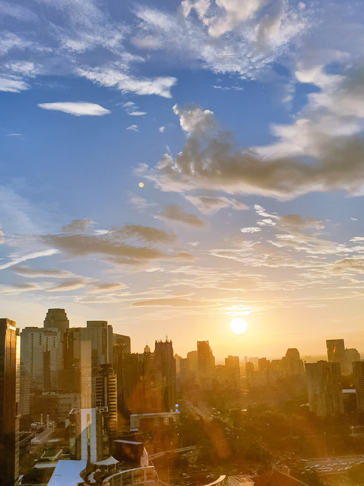
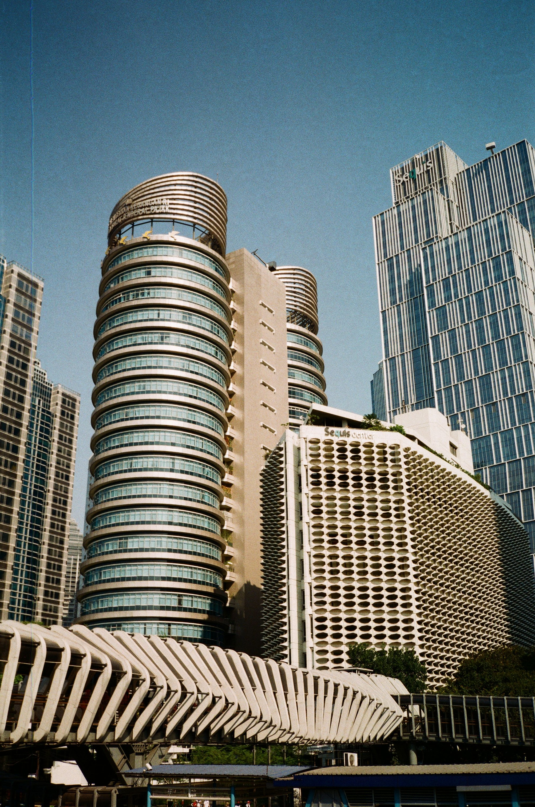

Jakarta, secara resmi bernama Daerah Khusus Ibukota Jakarta atau DKI
Jakarta, adalah ibu kota Indonesia dan sekaligus daerah otonom
setingkat provinsi. Jakarta memiliki lima kota administrasi dan satu
kabupaten administrasi. Sementara menurut pengertian secara umum,
Jakarta merupakan kota metropolitan. Jakarta terletak di pesisir
bagian barat laut Pulau Jawa. Dahulu pernah dikenal sebagai Sunda
Kelapa, Jayakarta, dan Batavia. Jakarta juga mempunyai julukan The Big
Durian karena dianggap kota yang sebanding dengan New York City (Big
Apple).Jakarta memiliki luas sekitar 664,01 km² (lautan: 6.977,5 km²),
dengan penduduk berjumlah 11.240.000 jiwa pada tahun 2023. Sebagai
pusat bisnis, politik, dan kebudayaan, Jakarta merupakan tempat
berdirinya kantor-kantor pusat BUMN, perusahaan swasta, dan perusahaan
asing. Kota ini juga menjadi tempat kedudukan lembaga-lembaga
pemerintahan dan kantor sekretariat ASEAN. Jakarta dilayani oleh dua
bandar udara, yaitu Bandara Soekarno–Hatta dan Bandara Halim
Perdanakusuma, serta tiga pelabuhan laut, yaitu Tanjung Priok, Sunda
Kelapa, dan Ancol.